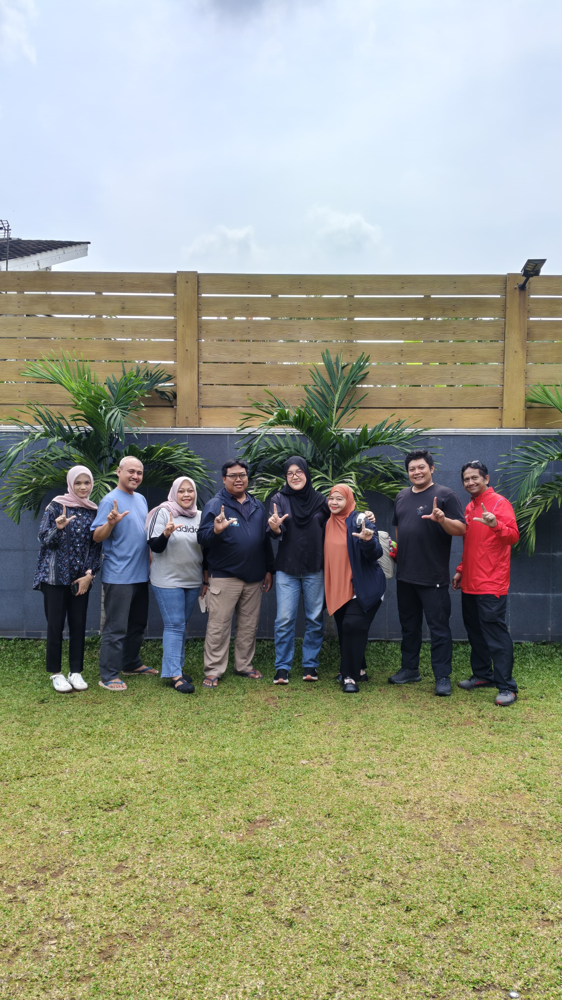
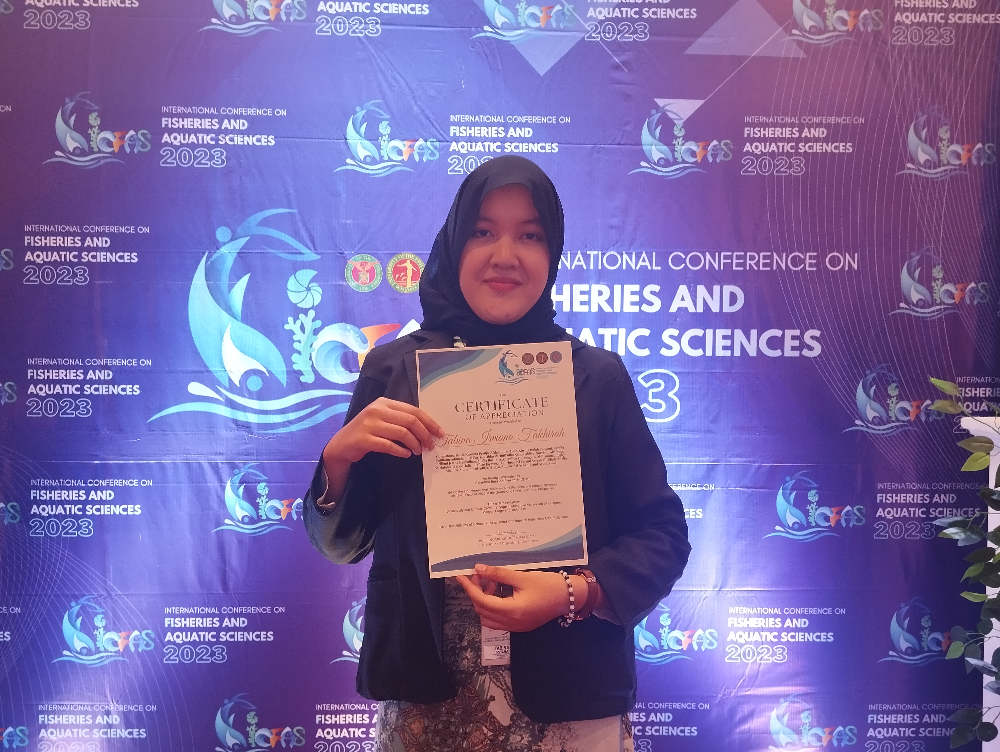
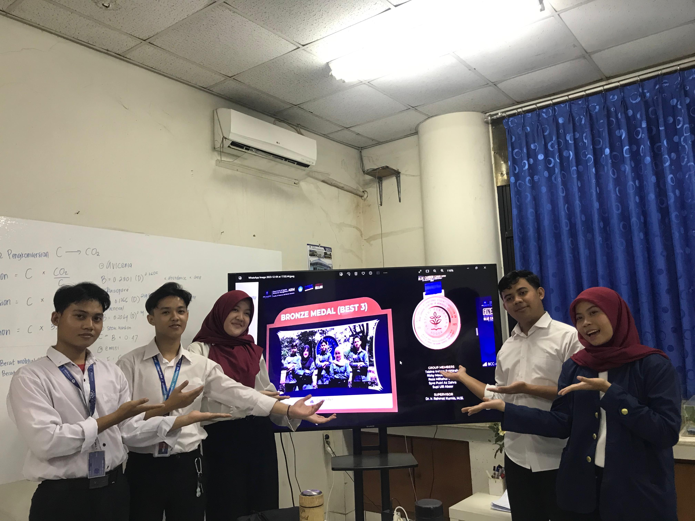

I gained valuable hands-on experience in managing Tuna, Skipjack, and Mackerel (TCT) fisheries within the EEZ and high seas. This experience deepened my interest in sustainable fisheries management and strengthened my skills in policy analysis, data interpretation, and regional fisheries governance.

I gained hands-on experience in fisheries conservation, licensing, quota management, and data visualization. This experience strengthened my skills in GIS, data analysis, and environmental governance while deepening my interest in sustainable fisheries and conservation management.

Participating as an oral presenter at the 7th ICFAS was an incredibly rewarding experience for me.
It not only boosted my confidence in public speaking but also challenged me to communicate scientific
ideas clearly in English to an international audience. I am deeply grateful for the opportunity to represent
my research on a global stage and to learn from fellow researchers across various disciplines.
This experience strengthened my academic and professional growth, and reminded me of the importance of
stepping out of my comfort zone to embrace new challenges and perspectives.

I participated in the International Student Competition on Blue Carbon Counting in Mangrove
Ecosystem, Indonesia, where my team and I developed a website called Carpenter. The website
functions as a user-friendly tool to estimate blue carbon storage in mangrove ecosystems based
on field data and scientific parameters. Through this project, I combined my knowledge of
coastal resource management with web development skills to promote awareness of carbon sequestration in mangroves.
This experience allowed me to explore the intersection of technology and environmental science,
and contributed to our achievement as one of the top three winners in the competition.